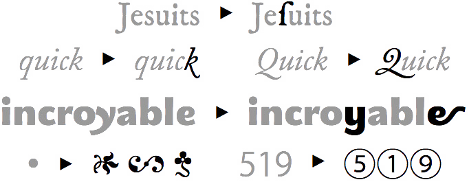

East Asian web typography
Crossing cultural boundaries for web layout inspiration
What is typography?
“Typography is writing with prefabricated letters”
—Gerrit Noordzij
| A a | B b | D d | E e | F f | G g |
| H h | I i | J j | K k | L l | M m |
| N n | O o | P p | R r | S s | Š š |
| Z z | Ž ž | T t | U u | V v | Õ õ |
| Ä ä | Ö ö | Ü ü | Estonian (27) | ||
| ا | ب | ج | د | ه | و |
| ز | ح | ط | ي | ك | ل |
| م | ن | س | ع | ف | ص |
| ق | ر | ش | ت | ث | خ |
| ذ | ض | ظ | غ | Arabic (28) | |
| א | ב | ג | ד | ה | ו |
| ז | ח | ט | י | ך כ | ל |
| ם מ | ן נ | ס | ע | ף פ | ץ צ |
| ק | ר | ש | ת | Hebrew (22) | |
| A a | B b | C c | D d | E e | F f |
| G g | H h | I i | J j | K k | L l |
| M m | N n | O o | P p | Q q | R r |
| S s | T t | U u | V v | W w | X x |
| Y y | Z z | English (26) | |||
Source Hans Serif Regular (65,535 glyphs)
Hippopotamus
(English) 12 letters
河马
Sagedussõnastik
(Estonian) 15 letters
词典
Grianghrafadóireachta
(Irish) 21 letters
摄影
Phoenician alphabet
甲骨文


“Chinese-script projects are crazy. The scope is mind-blowing.”
—David Březina from The long, incredibly tortuous, and fascinating process of creating a Chinese font
Sources: Worldometers, Ethnologue, W3Techs
Local content
“Local content is a critical component of efforts to bridge the digital divide.”
—Internet Society Policy Brief: Local Content
Internationalisation (i18n)
“To ensure that the technology supports text in any writing system of the world.”
—W3C Internationalisation
Web fonts
The CSS3 Fonts specification describes the basic controls CSS provides for selecting and using fonts within documents.

What is a font?
And what are glyphs?


Font formats for web use
| WOFF2 (Web Open Font Format 2) |


|
| WOFF (Web Open Font Format) |
|
| OTF (OpenType) |

|
| TTF (TrueType) |

|
| EOT (Embedded Open Type) |
|
| SVG (Scalable Vector Graphics) |

|
@font-face
@font-face {
font-family: 'Reforma';
src: url('reforma1969-gris.woff2') format('woff2'),
url('reforma1969-gris.woff') format('woff');
}


Anatomy of an @font-face rule
@font-face {
font-family: <family-name>;
src: [ <url> [format(<string> #)]? | <font-face-name> ] #;
font-style: normal | italic | oblique ;
font-weight: normal | bold | 100 | 200 | 300 | 400 | 500 | 600 | 700 | 800 | 900;
font-stretch: normal | ultra-condensed | extra-condensed | condensed | semi-condensed | semi-expanded | expanded | extra-expanded | ultra-expanded;
unicode-range: <urange> #;
font-variant: normal | none | [ <common-lig-values> || <discretionary-lig-values> || <historical-lig-values> || <contextual-alt-values> || stylistic(<feature-value-name>) || historical-forms || styleset(<feature-value-name> #) || character-variant(<feature-value-name> #) || swash(<feature-value-name>) || ornaments(<feature-value-name>) || annotation(<feature-value-name>) || [ small-caps | all-small-caps | petite-caps | all-petite-caps | unicase | titling-caps ] || <numeric-figure-values> || <numeric-spacing-values> || <numeric-fraction-values> || ordinal || slashed-zero || <east-asian-variant-values> || <east-asian-width-values> || ruby ];
font-feature-settings: normal | <feature-tag-value> #;
}@font-face {
font-family: 'Infini';
src: url('fonts/infini.woff2') format('woff2'),
url('fonts/infini.woff') format('woff');
/* no range specified, defaults to entire range */
}
@font-face {
font-family: 'Infini';
src: url('fonts/linbiolimum.woff2') format('woff2'),
url('fonts/linbiolimum.woff') format('woff');
unicode-range: U+0400–U+04FF; /* Unicode range for Cyrillic characters */
}Go to about:config from your address bar
Search for fonthighlighter and double-click it to change its value to true
Basic CSS font properties
font-size |
Indicates the desired height of the glyphs. Takes absolute or relative values. |
font-weight |
Specifies the weight of the glyphs in the font. Can use keywords or numerical values. |
font-style |
Allows italic or oblique faces to be selected. |
font-stretch |
Selects a normal, condensed or expanded face from a font family. Range spans over 9 keywords. |
font-size-adjust |
Adjusts the font-size to preserve the x-height of the first choice font. |
font-synthesis |
Controls whether user agents are allowed to synthesize bold or oblique font faces when missing. |
font-size-adjust
See the Pen Demo of font-size-adjust by Chen Hui Jing (@huijing) on CodePen.
font-synthesis


Font feature properties
font-kerning

|
font-variant-position

|
font-variant-position-ligatures

|
font-variant-numeric

|
font-variant-caps

|
font-variant-alternates

|
font-variant-east-asian

Variable fonts


See the Pen Grassy Text with Variable fonts. by Mandy Michael (@mandymichael) on CodePen.
The magic of Writing Modes
CSS Writing Modes Level 3 defines CSS features to support for various international writing modes, such as left-to-right (e.g. Latin or Indic), right-to-left (e.g. Hebrew or Arabic), bidirectional (e.g. mixed Latin and Arabic) and vertical (e.g. Asian scripts).
You can make your browser literally turn on its side from left-to-right.
🙃Or make it read from right-to-left.
🙂Vertical text is fun!
writing-mode property
| horizontal-tb | 从1987到现在 |
| vertical-rl | 从1987到现在 |
| vertical-lr | 从1987到现在 |
| sideways-rl* | 从1987到现在 |
| sideways-lr* | 从1987到现在 |
text-orientation property
text-combine-upright property

Yayoi Kusama
A vital part of New York’s avant-garde art scene from the late 1950s to the early 1970s, Yayoi Kusama developed a distinctive style utilizing approaches associated with Abstract Expressionism, Minimalism, Pop art, Feminist art, and Institutional Critique—but she always defined herself in her own terms. “I am an obsessional artist,” she once said. “People may call me otherwise, but…I consider myself a heretic of the art world.”
Kusama was born in 1929 into a well-off but dysfunctional family in Nagano, Japan. Largely shielded from the horrors of World War II, she was, as she has claimed, nevertheless scarred by her mother’s cruelty, her father’s infidelities, and her family’s discouragement of her interest in art making. She started painting at the age of 10 when she began experiencing the visual and aural hallucinations that would plague her, while also fueling her creativity, for the rest of her life. She has maintained that her “artwork is an expression of my life, particularly of my mental disease.”
CSS Logical Properties


A long list of references
- Source Han Serif / Noto Serif CJK History & Development
- Chinese Fonts & Related Issues
- Variable fonts, a new kind of font for flexible design
- Introducing OpenType Variable Fonts
- fvar — Font Variations Table
- Variable Fonts on the Web
- How to Use Variable Fonts on the Web
- Getting started with variable fonts
- 全球首款! 文鼎晶熙黑體支援可變式字體格式
- Creative text effects with CSS by Mandy Michael (video)
- W3C Internationalization & Text Layout Requirements
- Zhang, X. & Han, Q. (2009). The history of Chinese printing: (illustrated). Paramus, N.J: Homa et Sekey Books.
- Brokaw, C. & Reed, C. A. (2010). From woodblocks to the Internet: Chinese publishing and print culture in transition, circa 1800 to 2008. Leiden: Brill.
- Tsien T. (2011). Collected writings on Chinese culture. Hong Kong: The Chinese University Press.
- Tsien, T. & Shaughnessy, E. L. (2013). Written on bamboo & silk: the beginnings of Chinese books & inscriptions. Chicago: The University of Chicago Press.
- Houston, K. (2016). The book: a cover-to-cover exploration of the most powerful object of our time. New York: W.W. Norton & Company.
- 厉致谦 (2013). 西文字体的故事. 上海市: 同济大学出版社.
- Choi, K. E., & Kim, M. S. (2015). A Comparative Study on the Sociocultural Drivers in the Development of Printing Technology in Korea and Europe. Korea Journal, 55(4), 7-35.
- Park, H. O. (2014). The History of Pre-Gutenberg Woodblock and Movable Type Printing in Korea. International Journal of Humanities and Social Science, 4(9), 1.
- Haralambous, Y., & Horne, P. S. (2007). Fonts & encodings.